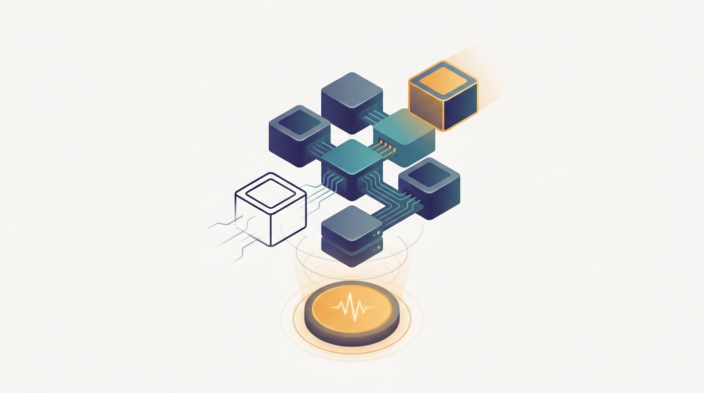

"I have ninety seconds. The all-reduce I am holding will not finish in ninety seconds. Somewhere a coordinator is about to discover that 'highly available' was always a statement about the fleet, never about me."
A Spot Instance, Moments Before Preemption
Fault-tolerant distributed training treats node failure, preemption, and stragglers as expected events rather than emergencies, and builds the job so that the loss can keep going down across a cluster whose membership changes underneath it. The pressure that drives this chapter is statistical, and it is unforgiving. The previous three chapters spread one model across thousands of tightly coupled devices, and that coupling is exactly what makes the whole job fragile: a synchronous data-parallel, tensor-parallel, or pipeline-parallel step is a single distributed barrier, so the failure of any one rank stalls or kills all of them. When the per-device mean time between failures is measured in months but the device count is in the thousands, the job-level mean time between failures collapses to hours, and a run that does nothing to prepare will spend more time crashing and recovering from scratch than making progress. The first response is checkpointing, but at this scale a naive global checkpoint is its own bottleneck, so the chapter develops sharded and asynchronous checkpointing that writes each rank's slice of state in parallel and overlaps the write with computation. A checkpoint is only useful if the resumed run is faithful to the one it replaced, which forces a hard look at determinism: data-loader order, RNG state, and the non-associativity of floating-point reductions all conspire to make "resume from step $k$" mean something subtler than it sounds. From there the chapter relaxes the fixed-cluster assumption entirely. Elastic training lets the worker set change size at runtime, re-forming process groups and rescaling the global batch as nodes join and leave, which is what makes it possible to run on cheap preemptible and spot capacity at all. Stragglers, the ranks that fall behind without failing outright, get their own treatment because a synchronous job runs at the speed of its slowest member. The chapter then takes up memory offload across the hierarchy, moving optimizer state and parameters down to host memory and NVMe so a job can fit and survive on fewer or smaller devices, and it closes on the monitoring and debugging that let an operator see a hang, a slow rank, or a silent divergence inside a job spread across a thousand machines. The thread that runs through all of it: at this scale, reliability is not a property you add at the end, it is a parallelism axis you design for from the start.
Chapter Overview
This is the fourth chapter of Part IV, and it changes the question the previous three were answering. Chapters 15 through 17 asked how to cut one model's computation across many devices and move data between them efficiently; this chapter asks how that carefully laid-out job survives the devices themselves failing, vanishing, or slowing down. The binding constraint is no longer memory or bandwidth, it is the job-level failure rate that grows with the device count, and the design goal is to make recovery cheap enough that the expected progress per wall-clock hour stays high even when interruptions are frequent. The recurring fact to keep in view: every synchronous collective from Chapter 4 is also a synchronous point of failure, so the same coupling that makes parallel training fast is what makes a single lost rank able to take the whole run down.
The eight sections fall into four groups. The first quantifies the problem and lays the foundation: Section 18.1 shows why failure is the norm once a job spans thousands of GPUs, and Section 18.2 builds the distributed checkpointing that turns a crash from a total loss into a bounded one. The second group makes recovery trustworthy and dynamic: Section 18.3 develops the restart, replay, and determinism that let a resumed run faithfully continue, and Section 18.4 introduces elastic training that lets the worker set grow and shrink while the job keeps running. The third group attacks the slowdowns and reclamations that elasticity invites: Section 18.5 detects and mitigates the stragglers that throttle a synchronous job to its slowest rank, and Section 18.6 turns preemption and cheap spot capacity from a hazard into a deliberate cost strategy. The fourth group fits the job onto the hardware and keeps it observable: Section 18.7 offloads optimizer state and parameters across the memory hierarchy so the job survives on less, and Section 18.8 builds the monitoring and debugging that make a hang or a silent divergence visible inside a thousand-machine run.
Read in order, the eight sections take you from "a thousand-GPU job will fail every few hours and lose everything if it is not ready" to "a job checkpoints cheaply, resumes deterministically, rescales its worker set on demand, tolerates stragglers and preemptions, fits within the memory it has, and stays observable, so the loss keeps descending across a cluster that never stops changing." The argument is cumulative: the failure statistics create the need, checkpointing bounds the damage, determinism makes recovery faithful, elasticity makes the cluster itself flexible, and straggler, preemption, offload, and monitoring machinery is what keeps the bargain holding through a multi-week run.
Prerequisites
This chapter builds directly on two earlier ones. From Chapter 2: Distributed Systems Concepts for AI you carry the vocabulary of failure itself: what a fail-stop crash is, why partial failure and network partitions are the defining difficulty of any distributed system, how heartbeats and timeouts detect a dead participant, and why agreeing on who is still alive is a coordination problem and not a free observation. This chapter takes those concepts and applies them to the one workload where every participant is locked in a tight synchronous barrier, which is the worst case for fault tolerance. From Chapter 16: Model, Pipeline, and Sharded Parallelism you carry the picture of a single model's state spread across devices as shards, because the checkpoint you must write and restore is exactly that distributed state, and the process groups you must rebuild after a failure are the ones that map tensor, pipeline, and sharded parallelism onto the interconnect. The chapter assumes comfortable Python and PyTorch, the ranks-and-process-groups model of Chapter 4, and a working memory of how a synchronous data-parallel step is structured from Chapter 15. No prior experience with checkpointing systems or elastic schedulers is required; Section 18.1 motivates the entire chapter from the failure arithmetic before any recovery mechanism is introduced.
Learning Objectives
- Derive why the job-level mean time between failures collapses as the device count grows, and explain why a synchronous collective is also a synchronous point of failure.
- Design sharded and asynchronous checkpointing that writes distributed model and optimizer state in parallel and overlaps the write with computation.
- Compute an optimal checkpoint interval from the failure rate and checkpoint cost, balancing wasted work against checkpoint overhead.
- Explain the sources of nondeterminism in a training job (data order, RNG state, reduction order) and the steps that make a resumed run faithful to the original.
- Describe elastic training with dynamic membership, including how process groups re-form and how the global batch is rescaled when workers join or leave.
- Detect stragglers in a synchronous job and apply mitigation strategies that keep the run from proceeding at the speed of its slowest rank.
- Architect a training job for preemptible and spot capacity, treating reclamation as an expected event with a graceful drain-and-resume path.
- Offload optimizer state and parameters across the GPU, host-memory, and NVMe hierarchy so a job fits and survives on fewer or smaller devices.
- Instrument a distributed training job to make hangs, slow ranks, and silent divergence observable, and debug failures that span many machines.
If you keep one thing from this chapter, keep this: at thousand-GPU scale failure is a certainty rather than an exception, so a training job must be built to checkpoint cheaply, resume deterministically, rescale its worker set on demand, and tolerate stragglers and preemptions, treating reliability as a parallelism axis designed in from the start rather than a recovery script bolted on at the end. Read forward, the sections build the craft in layers: first the failure arithmetic that makes recovery non-optional, then the sharded and asynchronous checkpointing that bounds the loss from any one crash, then the determinism that makes a resume faithful and the elasticity that makes the cluster itself flexible, then the straggler and preemption handling that keeps a synchronous job moving on uncooperative hardware, and finally the memory offload and monitoring that fit the job onto its devices and keep it observable. Read as a question, the chapter asks of any long job running on a large, unreliable cluster: how do you save its state without stalling it, how do you bring it back exactly where it was, how do you let the cluster change size around it, and how do you keep the slow and the doomed ranks from dragging or killing the whole run. The roadmap below walks the eight sections that answer it.
Chapter Roadmap
- 18.1 Failure Is the Norm at Thousand-GPU Scale Works out how the job-level failure rate grows with the device count and why a single lost rank stalls or kills every other one, establishing that recovery is a design requirement and not a contingency.
- 18.2 Distributed Checkpointing Builds sharded and asynchronous checkpointing that writes each rank's slice of model and optimizer state in parallel and overlaps the write with computation, turning a crash from a total loss into a bounded one.
- 18.3 Restart, Replay, and Determinism Tracks the data-order, RNG, and reduction-order nondeterminism that make a resumed run diverge from the original, and develops the controls that let a job replay faithfully from a checkpoint.
- 18.4 Elastic Training Introduces dynamic membership, where the worker set grows and shrinks at runtime, and shows how process groups re-form and the global batch rescales without tearing down the run.
- 18.5 Straggler Detection and Mitigation Develops the detection and mitigation that keep a synchronous job from running at the speed of its slowest rank, distinguishing a transient slowdown from an outright failure.
- 18.6 Preemption and Spot-Instance Training Turns cheap preemptible and spot capacity from a hazard into a cost strategy by treating reclamation as an expected event with a graceful drain-and-resume path.
- 18.7 Memory Offload Across the Hierarchy Moves optimizer state and parameters down to host memory and NVMe so a job fits and survives on fewer or smaller devices, weighing the bandwidth cost of each tier against the capacity it buys.
- 18.8 Monitoring and Debugging Distributed Training Instruments the job so a hang, a slow rank, or a silent divergence becomes visible inside a thousand-machine run, and develops the techniques for debugging failures that span the whole cluster.
Read the eight sections in order and you will hold a working blueprint for a training job that expects interruption and keeps descending anyway: Section 18.1 establishes why failure is certain at scale, Sections 18.2 and 18.3 make recovery cheap and faithful, Section 18.4 lets the cluster itself change size around the run, Sections 18.5 and 18.6 tame the stragglers and preemptions that elasticity invites, and Sections 18.7 and 18.8 fit the job onto its hardware and keep it observable. The thread to watch is the synchronous barrier of Chapter 4 reappearing as a liability, and the failure model of Chapter 2 moving from the background into the center of how the job is engineered.
What's Next?
This chapter armored a training job against a cluster that fails, shrinks, and slows underneath it, but it stayed deliberately agnostic about what is being trained. The mechanisms here are general: checkpoint, resume, rescale, and survive applies to a recommender as much as to a language model. Chapter 19: Training Foundation Models at Scale puts every axis from this part to work on one concrete target, the multi-week, multi-thousand-GPU pre-training run that produces a frontier foundation model. It composes the data, tensor, pipeline, sharded, and expert parallelism of Chapters 15 through 17 with the fault tolerance and elasticity of this chapter into a single end-to-end recipe, and it adds the pieces that only matter at that scale: the data pipeline that feeds trillions of tokens, the learning-rate and stability engineering of a run too expensive to repeat, and the operational discipline of babysitting a job that cannot be allowed to fail silently for a single hour. Read it next, and watch every reliability mechanism you just built become load-bearing on a run where a lost week is a lost fortune.
Bibliography & Further Reading
Failure, Recovery, and Optimal Checkpoint Intervals
Dean, J., Ghemawat, S. "MapReduce: Simplified Data Processing on Large Clusters." OSDI 2004 / Communications of the ACM, 2008. research.google/pubs/pub62
The system whose re-execution-on-failure model is the canonical example of treating worker failure as routine and recovering by replaying lost work, the conceptual root of Section 18.1.
Young, J. W. "A First Order Approximation to the Optimum Checkpoint Interval." Communications of the ACM, 17(9), 1974. dl.acm.org/doi/10.1145/361147.361115
The classic result that derives the optimal checkpoint interval from the failure rate and checkpoint cost, the analytical backbone for the checkpoint-frequency reasoning of Section 18.2.
Daly, J. T. "A Higher Order Estimate of the Optimum Checkpoint Interval for Restart Dumps." Future Generation Computer Systems, 22(3), 2006. doi.org/10.1016/j.future.2004.11.016
The refinement of Young's formula to a higher-order estimate, the more accurate model for choosing checkpoint frequency under realistic restart costs in Section 18.2.
Distributed and Frequent Checkpointing Systems
Mohan, J., Phanishayee, A., Chidambaram, V. "CheckFreq: Frequent, Fine-Grained DNN Checkpointing." USENIX FAST 2021. usenix.org/conference/fast21/presentation/mohan
The system that makes checkpointing frequent and asynchronous by overlapping the write with computation and auto-tuning the interval, a direct reference for the asynchronous checkpointing of Section 18.2.
Eisenman, A., Matam, K. K., Ingram, S., Mudigere, D., Krishnamoorthi, R., Nair, K., Smelyanskiy, M., Annavaram, M. "Check-N-Run: A Checkpointing System for Training Deep Learning Recommendation Models." arXiv:2010.08679, 2020. arxiv.org/abs/2010.08679
A production checkpointing system that uses differential and quantized checkpoints to cut the write cost of enormous embedding tables, illustrating the engineering of Section 18.2 at fleet scale.
Wang, Z., Jia, Z., Zheng, S., Zhang, Z., Fu, X., Ng, T. S. E., Wang, Y. "Gemini: Fast Failure Recovery in Distributed Training with In-Memory Checkpoints." SOSP 2023. dl.acm.org/doi/10.1145/3600006.3613145
The system that checkpoints to peer CPU memory across the cluster for near-instant recovery, pushing the recovery cost in Section 18.1 and Section 18.2 toward the limit.
PyTorch Team. "Distributed Checkpoint (DCP)." PyTorch Documentation. pytorch.org/docs/stable/distributed.checkpoint.html
The official API for saving and loading sharded distributed state in parallel across ranks, the production tool behind the sharded checkpointing of Section 18.2.
Elastic, Straggler-Tolerant, and Preemptible Training
PyTorch Team. "Torch Distributed Elastic (torchrun)." PyTorch Documentation. pytorch.org/docs/stable/elastic/run.html
The official elastic launcher that re-forms process groups and restarts workers on membership change, the production reference for the dynamic membership of Section 18.4.
Jang, I., Yang, Z., Zhang, Z., Jin, X., Chowdhury, M. "Oobleck: Resilient Distributed Training of Large Models Using Pipeline Templates." SOSP 2023. dl.acm.org/doi/10.1145/3600006.3613152
The system that recovers from failures by reconfiguring among precomputed pipeline templates, keeping a large-model run going without a full restart, a key reference for Sections 18.4 and 18.6.
Thorpe, J., Zhao, P., Eyolfson, J., Qiao, Y., Jia, Z., Zhang, M., Netravali, R., Xu, G. H. "Bamboo: Making Preemptible Instances Resilient for Affordable Training of Large DNNs." USENIX NSDI 2023. usenix.org/conference/nsdi23/presentation/thorpe
The system that uses redundant computation across pipeline stages to ride out spot-instance preemptions, the direct foundation for the spot-instance strategy of Section 18.6.
Memory Offload Across the Hierarchy
Ren, J., Rajbhandari, S., Aminabadi, R. Y., Ruwase, O., Yang, S., Zhang, M., Li, D., He, Y. "ZeRO-Offload: Democratizing Billion-Scale Model Training." arXiv:2101.06840, 2021. arxiv.org/abs/2101.06840
The system that offloads optimizer state and gradients to host memory so a single GPU can train far larger models, the foundation for the host-memory tier of Section 18.7.
Rajbhandari, S., Ruwase, O., Rasley, J., Smith, S., He, Y. "ZeRO-Infinity: Breaking the GPU Memory Wall for Extreme Scale Deep Learning." arXiv:2104.07857, 2021. arxiv.org/abs/2104.07857
The system that extends offload down to NVMe storage to train trillion-parameter models on limited GPU memory, the full-hierarchy reference for Section 18.7.